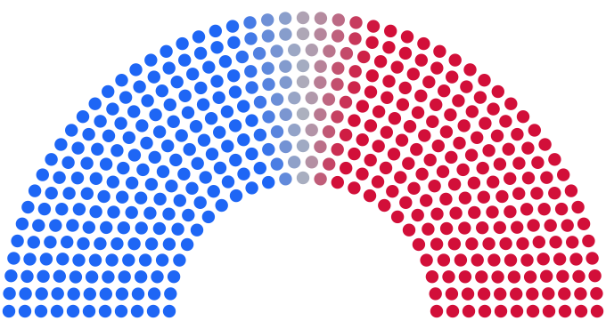

MIDTERMS
2026
An open forecast of every House, Senate and governor race
Polls, fundamentals and expert ratings in 50,000 correlated simulations. Frozen before Election Day, scored after.

midterms.karazajac.io
· Kara Zajac